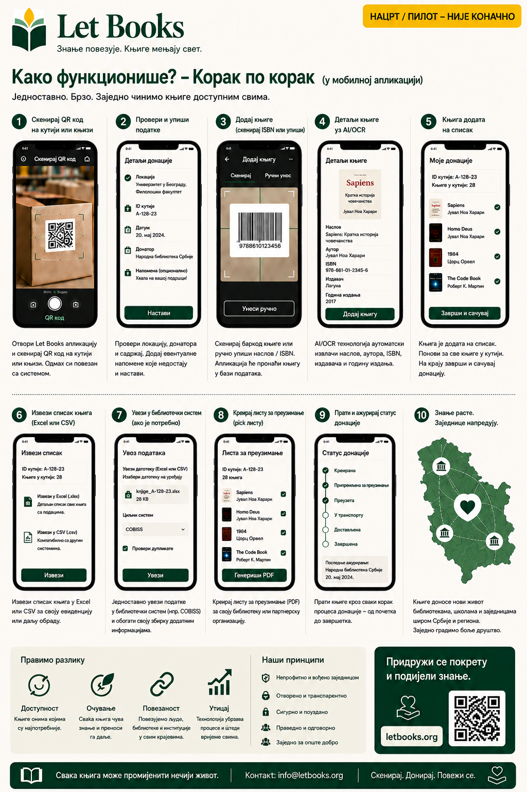

Текст и токови рада на овој страници описују смер пројекта, а не завршену продукцијску имплементацију.
Водич за појединце
Попишите прву кутију без претварања свега у велики пројекат.
Ова страница је за приватне донаторе, породице, волонтере и мање организације које желе да сачувају озбиљне књиге и касније их лакше понуде и пронађу.

Када је овај водич за вас
- Имате књиге код куће, у складишту или канцеларији.
- Желите да знате шта је у свакој кутији пре понуде.
- Треба вам мобилни ток рада са мање куцања.
- Касније можда донирате једној или више библиотека.
Како изгледа успех
- Скенирате кутију и видите њен садржај.
- Додате нову књигу за неколико секунди.
- Извезете уредну листу за преглед.
- Поново пронађете тражене примерке када дође време за преузимање.
Брзи ток рада
Први пролаз мора бити довољно брз за стварне полице и стварне кутије.
Скенирајте QR кутије
Отворите тачан контекст локације пре уноса.
Фотографишите насловницу
Насловница остаје главни визуел за прегледање.
Скенирајте или упишите ISBN
Ако је видљив, искористите га. Ако није, сачувајте па обогатите касније.
Сачувајте и наставите
Брзи унос не сме да тражи потпуну библиографију пре следеће књиге.
Извезите за преглед
Припремите серију за библиотеку или партнера.
Направите листу преузимања
Тражене књиге групишу се по соби, полици и кутији.
Шта је најважније забележити
Наслов, аутора, годину када је видљива, стање примерка и тачну локацију. То су подаци који касније донацију чине изводљивом.
AI као помоћник, не ауторитет
Ако OCR или предлози метаподатака буду укључени касније, третирајте их као предлоге који траже људску проверу.
Пример: Породица наследи професорову техничку библиотеку, означи кутије, фотографише насловнице, извезе једну серију за преглед и касније пронађе тачно оне примерке које библиотека жели.